本轮未推倒重写：槽位树、动态附件槽、列宽调整、物品数据库、本地资源与地图功能全部保留； 所有改动都是业务逻辑修复，不是表层视觉效果。仍有两项本轮明确未接入的功能（枪械槽配装、商人买/卖价）， 已在界面与报告中标为「待接入 / 暂不可用」，没有用假数据冒充。
用户插话反馈「左侧的配装你做的太丑了」，并提供了参考布局图
ui图标/配装参考布局.png（546×481：顶部数值条 + 深色卡片阵 + 灰剪影 + 居中白字槽位名 +
选中绿描边 + 底部 Final Cost: / Buy | Sell）。
本轮只重做左侧装备工作区的呈现，不动槽位驱动模型、冲突校验、统计计算、右侧装备表、
列宽持久化、物品数据库、本地资源与地图功能。
| 参考图要素 | 本轮落地方式 | 证据 |
|---|---|---|
| 深色卡片阵（四列不挤压，卡片有呼吸感） | 左栏由 256px 放宽到 400px；卡片板按 5 条 band 排布，卡片 78px 起、 头部卡 92px、护甲行 112px、枪械行 92px；选中卡划 58% 居中 | 截图 r5-06-board-empty.png |
| 灰色剪影 + 居中白字槽位名 | 9 个根槽位各一张本地内联 SVG 剪影（LW_SIL，全为填充图元、
无 stroke-only、无 CSS 动画 / transform）：头盔=头+颈、护甲=宽带肩背心、
胸挂=面板+三弹匣袋、背包=主体+顶盖、近战=匕首、枪械=步枪，彼此轮廓可区分 |
截图 r5-06-board-empty.png |
| 选中 → 绿色描边（不压暗底色） | .lw-cell[data-state="focus"] 只改描边；已装态用第二档绿 |
截图 r5-07-equipped-board.png |
| 父卡片下方一条细分段条 | 子槽条由「整行列表」改为紧凑分段筹码条：可装子槽 = 可点小筹码，
固定内衬 = 整行虚线筹码（带材质 / 等级 / 耐久 / 防护区真实数据，不可点、无 ×）。
条仍紧跟各自父装备（.lw-node-group 由 renderGearTree
在该行卡片之后 append），父装备一换即重建，不统一堆到底部 |
截图 r5-07-equipped-board.png |
底部 Final Cost: + Buy | Sell 两格平分 |
费用面板改为居中「Final Cost · 价格档快照」+ 绿色总价，下方 Buy / Sell 两格平分 | 截图 r5-04-cost.png |
| 不把原始英文键名露给用户 | 上游 armorSlots[].zone 大小写不统一（Front_plate vs
front_plate），新增大小写无关查表 plateLabel()，
插板槽统一显示「前插板 / 后插板 / 左侧板 / 右侧板」 |
截图 r5-07-equipped-board.png 护甲子槽 |
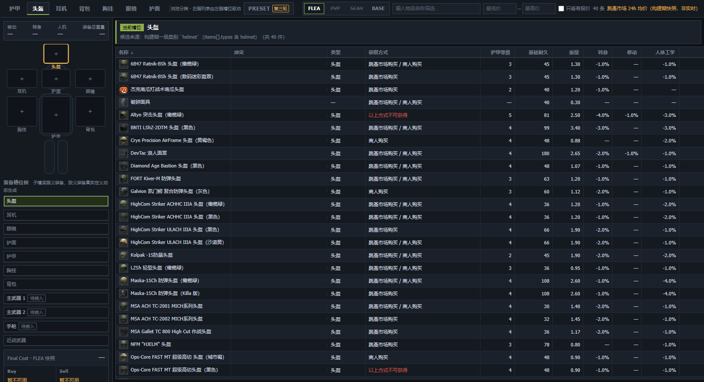
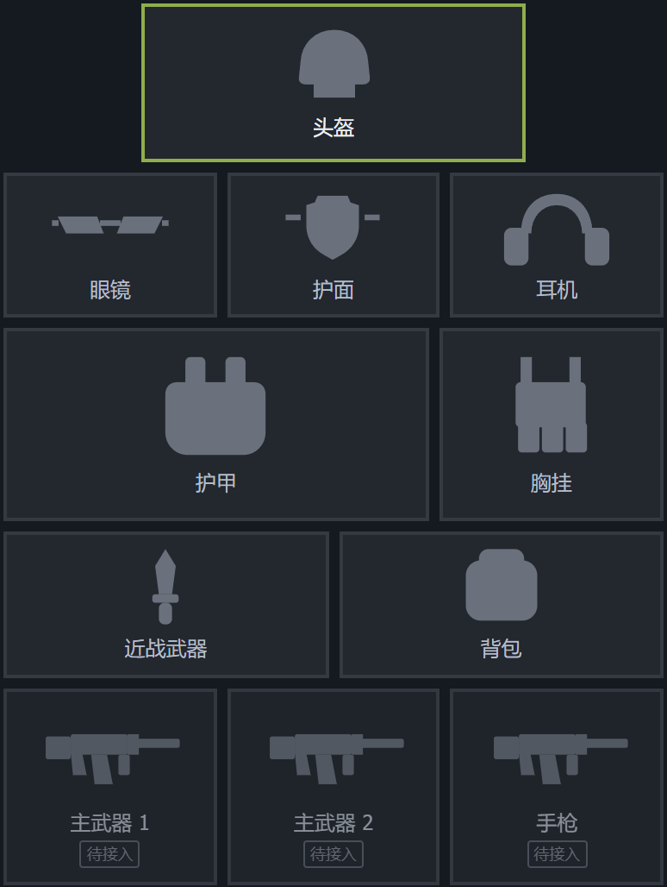
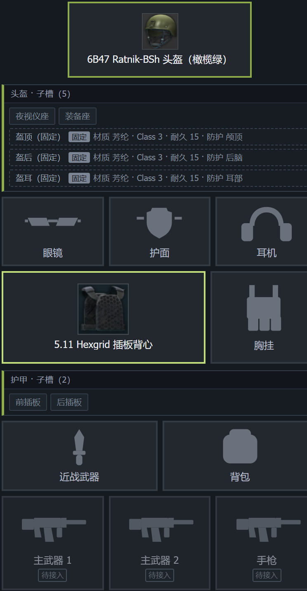
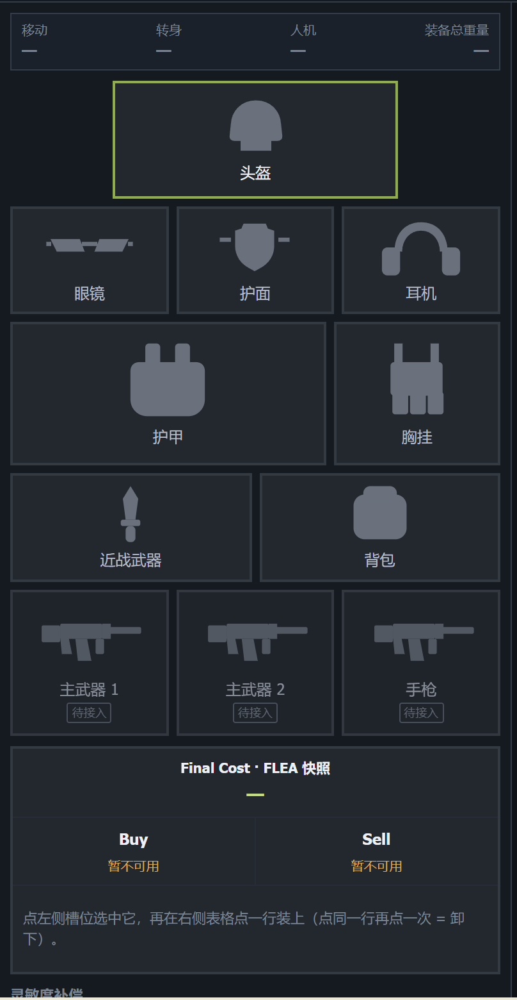
本轮未改动右侧装备表与地图视图；python -m pytest tests -q →
644 passed / 1 skipped（含同步更新的卡片板静态断言与 plateLabel 抽取）。
| 要求 | 落地方式 | 实测证据 |
|---|---|---|
| 业务逻辑层统一安装前校验，不能只禁按钮 / 靠 CSS | 新增唯一入口校验 installCheck(itemId, nodeId)（app.js L4589），equipItem 在改动任何状态前先过它；返回 allowed:false 时直接 return，不写 state.loadout |
静态测试断言 equipItem 内先调 installCheck 再改状态 |
| 点击冲突物品不得改动任何状态（已装备物品 / 槽位 / 附件树 / 价格 / 重量 / 减益） | 拦截分支只写 state.pending（提示串），随后 syncLwFilters() 仅刷新提示栏 |
运行时实测：点击冲突胸挂前后 statsBefore = statsAfter = 移动 -1.0% / 转身 -1.0% / 人机 -1.0% / 装备总重量 1.02 kg 左侧槽位标签 before = after =「胸挂」；截图 04 |
| 不得自动卸下现有装备以容纳新物品 | installCheck 只读遍历已装备节点，命中即拒绝，从不反写其它槽位 |
拦截后 armorInstalled 仍是「5.11 Hexgrid 插板背心」（运行时日志） |
| 区分「明确装备互斥 / 槽位不兼容 / 普通警告」 | conflictKinds 只返回确认不兼容的规则名（上游装备互斥 / 防弹衣与装甲弹挂互斥）；普通属性提醒不进这个函数，不过滤、不拦截 |
冲突列文案形如「⛔ 不可安装：与已装备的 5.11 Hexgrid 插板背心 冲突（防弹衣与装甲弹挂互斥）」，截图 03 |
| 保留红色状态与冲突原因 | rowClass 给冲突行挂 tbl-conflict（整行红）+ tbl-locked（不可用光标）；样式在 .loadout-workbench .tbl-row.tbl-conflict |
截图 03（36 行冲突候选整行标红） |
| 要求 | 落地方式 | 实测证据 |
|---|---|---|
| 两种先后顺序都互斥 | conflictKinds(a,b) 用对称判定 (isBodyArmor(a)&&isArmoredRig(b)) || (isArmoredRig(a)&&isBodyArmor(b))，与安装先后无关 |
动态测试覆盖两个方向：先装护甲再装弹挂 / 先装弹挂再装护甲，两次都 allowed:false |
| 卸下其一后另一类恢复可选 | 冲突基于当前已装备集合实时计算，不缓存「冲突标记」；卸下后重算即通过 | 动态测试：卸下护甲后同一件弹挂 allowed:true |
| 普通无装甲弹挂不得被误判冲突 | isArmoredRig 要求上游 pt === "ChestRig" 且 aps 里真实存在固定内衬（fx）或有插板槽（plates）；两个条件都没有的普通弹挂返回 false |
动态测试：普通弹挂 + 护甲 → allowed:true（不冲突） |
| 基于真实装备属性，不用中文名称判断 | 判定只看上游 pt / aps 结构；上游 conflictingItems 对护甲、弹挂全为空（实测 0/46、0/52），故自建这条派生规则并在注释里说明 |
静态测试断言 isArmoredRig 不含任何中文名匹配 |
| 要求 | 落地方式 | 实测证据 |
|---|---|---|
| 统一检查所有已安装可装备物品，不只头盔与防弹衣 | equippedList()（L5731）遍历 state.loadout 本身，键即真实安装位；覆盖根槽（头盔 / 耳机 / 眼镜 / 护面 / 护甲 / 胸挂 / 背包 / 近战）+ 子槽（armor/Front_plate 等实际装上的插板） |
动态测试：装上眼镜 / 背包 / 护甲板后三项减益都随之变化 |
| 每个物品只计一次 | 以 state.loadout 的键为唯一来源，同一 id 不会因渲染多次而重复累加 |
动态测试：同一件物品的 penOf 只出现一次 |
| 固定内衬不得重复增加父装备属性 | 固定内衬（kind === "liner"）永远不会写进 state.loadout，因此不参与 gearTotals |
动态测试：装上带内衬的护甲，件数只 +1，不是 +2 |
| 缺失数据优先补齐、不得伪造 | 上游没有惩罚字段的物品按 0 处理（即「无此项」），不补固定惩罚；构建期覆盖率见第四节 | 覆盖率：penAny 383 / penT 244 / penS 216 / penE 330 |
| 要求 | 落地方式 | 实测证据 |
|---|---|---|
| 删除左侧下方独立的大面板 | 原「减益合计」面板与其长篇说明整块移除，renderGearCost() 里不再出现该区块 |
全库检索 减益合计 仅剩一处历史注释，无任何渲染代码 |
左上第一行 移动 / 转身 / 人机，第二行数值 |
renderLwStats()（L5458）生成两行：.lw-stat-labs + .lw-stat-nums，三列网格对齐；负值给 data-tone="bad" |
运行时实测文本：移动 转身 人机 / -1.0% -1.0% -1.0%；截图 01 |
| 右上角显示「装备总重量」+ 实际总重量 | 同一容器内 justify-content: space-between，右侧 .lw-stat-weight 放标签与 fmtNum(w,2) + " kg" |
运行时实测：装备总重量 1.02 kg |
| 要求 | 落地方式 | 实测证据 |
|---|---|---|
| 四个槽位真实存在 | ROOT_SLOTS（L4051）扩到 11 个根槽，新增 primary1 / primary2 / holster / melee |
截图 07 / 08；人形槽位框未改动（本轮只改槽位树与表格） |
| 枪械槽只做 UI 与数据接口，显示明确「待接入」 | 三个槽位标 pending: true；candidatesOf() 对 pending 直接返回空数组；candidateSource() 写明「候选来源：**待接入** …枪械配装与预设保存实现前不提供任何候选」 |
运行时实测 primary1Rows = 1（表格只有空数据行，无候选）；截图 07 |
| 不提供虚假枪械预设列表 | 不拿 5480 件普通物品冒充预设；候选集为空是设计如此 | 空数据行文案「当前槽位没有匹配的候选装备」+ 顶部「待接入」说明 |
| 近战武器用本地数据建正确候选集合并可实际安装 | 按上游 pt === "Melee" 出候选（types[] 里没有 melee / knife，只能按 pt 判定）；equipItem 与其它槽位同一入口，可实际装上 |
运行时实测 meleeRows = 27，首行「"杀人鲸"推刃匕首 / Melee / 跳蚤市场购买 / 0.15 / — / 500,000 ₽」；截图 08 |
| 要求 | 落地方式 | 实测证据 |
|---|---|---|
| 支持 跳蚤市场购买 / 商人购买 / 商人兑换 / 以上方式不可获得 | 构建期 _access_sources()（fetch_data.py L1206）落库为 src[]；flea = types 不含 noFlea；trader = buyFromTrader 有货币报价；barter = types 含 barter |
覆盖率表（第四节）；首行实测「跳蚤市场购买」 |
| 多种方式必须全部展示 | accessText() 按固定序 [flea, trader, barter] 拼接，不强行只留一个 |
实测 2402 件同时有 flea + trader、240 件 barter + flea、10 件三种齐全 |
| 只有来源完整且确认无以上方式才标「以上方式不可获得」 | none 仅在 types 非空且三种来源一个都没有时给出 |
1217 件 none 的 ts 样例：["noFlea"] / ["mods","noFlea"]…均为非空；无一件同时含 none 与真实来源 |
| 数据缺失 / 无法判断 →「数据未确认」 | types 为空或非列表 → ["unknown"]，界面文案「数据未确认」并在悬停说明「不误判为不可获得」；与 none 用 data-tone 分开着色 |
7 件 unknown：防弹衣维修套件 / 武器维修套件 / 装有糖果的南瓜 / 加密U盘 / Labrys 研发记录 / 军用数据随身碟 / Dunduk 软盘 |
| 构建期提取并打包，运行期不联网 | src 随 data/items.json 分发；前端只读本地字段，任何情形都不发网络请求 |
静态测试：工作台代码不含任何 fetch / XHR 取来源数据 |
| 要求 | 落地方式 | 实测证据 |
|---|---|---|
| 删除错误的「部位有效护甲值」列 | gearColumns() 已无该列（它把防护等级与覆盖部位揉在一起）；改用「护甲等级」+「防护区域」两列各司其职 |
截图 02 / 09 全列可见，无此列 |
| 保留唯一语义明确的「有效耐久」列 | effDurCol 文本 fmtNum(r.effDur, 0)，取不到显示「—」 |
截图 09 |
| 有效耐久须用未四舍五入的实际系数计算 | effectiveDurability(rec) = rec.dur / materialDestructibility(rec.mat)，系数直接取 audit.materials[mat].d 原值，显示时才四舍五入 |
动态测试：系数 0.19 → dur/0.19 与逐位手算一致 |
| 六个概念分列不得重新合并，不适用显示「—」 | 护甲类列顺序：护甲等级 / 基础耐久 / 装甲材质 / 材料毁损系数 / 有效耐久 / 防护区域，六列各自独立 |
截图 09（2400 宽视口一次显示全部列） |
| 要求 | 落地方式 | 实测证据 |
|---|---|---|
| 文字左对齐 / 数值右对齐 / 图标可居中 | alignOf(col)：显式 col.align 优先，缺省时 col.num → right、其余 left；cellClass 映射到 .tbl-num / .tbl-mid / 默认 |
静态测试：列定义里文字列显式 align:"left"、数值列 num:true |
| 表头、数据行、空数据行遵循同一对齐 | buildHead() 与数据行、空数据行都走同一个 cellClass(col)，所以三者天然一致，不靠内容宽度决定 |
动态测试：同一列在表头 / 数据行 / 空数据行的 class 完全一致 |
| 类别切换时保持一致 | 列集由 setColumns() 整表替换并重建表头，同名列复用同一 align / num 定义 |
截图 02（护甲）/ 08（近战）对照 |
| 要求 | 落地方式 | 实测证据 |
|---|---|---|
| 先扫描图标目录建映射表再接入 | tools/iconize.py 新增 ZONE_JOBS（17 项）与 copy_zones()，从「防护部位」源目录复制到 assets/icons/zones/（ASCII 文件名）；app.js 侧 ZONE_ICON_BY_WORDS 建 17 项映射 |
静态测试：17 个文件真实存在，且与 iconize.ZONE_JOBS 的输出名一一对应 |
| 右侧表防护部位改紧凑本地图标组合，悬停显示中文部位名 | renderZoneCell 命中即渲染 <img class="tbl-zone-ico">，title 给完整中文部位名 |
截图 02 / 10（2× 放大） |
| 命中口径：完全一致才用那张图 | zoneIconKey() 把真实 zone 投影成部位词并按 ZONE_WORD_ORDER 规范化为键；必须与某张图完全一致才命中，否则 null → 文字降级（不做模糊匹配、不拿别的图顶替） |
动态测试：["RibcageUp","RibcageLow","LeftSideChestDown"] → null（不拿「胸部|胃部」图顶替） |
| 图标未覆盖的部位不能造成误读 | 命中图标但物品还防到图上没画的部位时，图标后补标暗色小字 ＋上背（.tbl-zone-more），悬停与审计都注明「未在图中标示」 |
运行时实测行文本尾部：…芳纶 0.19 907 ＋后背插板区、上背；动态测试断言为两个子节点 |
| 缺图标须文字降级并在映射报告注明 | 无法投影的部位走 zoneText 文字，悬停一律给完整中文部位名并说明「含现有图标无法表达的部位（…）→ 文字降级」；长清单被列宽截断时也能靠悬停看全 |
降级 132 件；审计面板列出主因（第五节） |
| 图标须在项目可打包的本地资源目录，运行期不依赖开发机路径 | app.js 只出现 assets/icons/zones/*.png 相对路径 |
静态测试：映射块内不得出现 D: / http: / // / \\ |
| 不引入远程图标 / 在线字体 / 运行期网络请求 | 全部为本地 PNG；无 @font-face 远程源、无 link 外链 |
审计面板明确标注「全部为本地资源，运行期不联网」 |
| 新增图标映射审计 | zoneIconAudit()（L4283）统计张数 / 命中 / 降级 / 无防护 / 降级主因，renderLwAudit() 末尾输出一行 |
截图 05；运行时证据见下 |
防护区域图标映射（全部为本地资源，运行期不联网）：本地图标 17 张；命中 205 件；文字降级 132 件；无防护区域 5143 件；降级主因：上背 23 件、后背插板区 20 件、下背 18 件、后背插板区 3 件。
| 阶段 | 内容 | 状态 |
|---|---|---|
| 第一阶段 | 装备互斥 + 点击仍能安装 → conflictKinds / installCheck / equipItem 前置校验 / 冲突行红色与原因 | 已完成 |
| 第二阶段 | 减益统计重算 + 删除左下合计面板 + 左上紧凑统计栏 + 四个武器槽位 → equippedList / gearTotals / renderLwStats / ROOT_SLOTS | 已完成 |
| 第三阶段 | 获取方式列 + 纠正有效耐久列 + 统一表格对齐 + 接入防护部位图标 → accessText / gearColumns / alignOf / ZONE_ICON_BY_WORDS / renderZoneCell | 已完成 |
643 passed1 skipped — python -m pytest tests -q
新增/更新的断言分布在两处：
test_zone_icon_mapping_uses_local_packaged_assets：词序规范化、17 项、无绝对/远程路径、文件真实存在、与 iconize.ZONE_JOBS 一一对应、接线断言，以及「新样式限在 .loadout-workbench 内」。tbl-zone-ico + 中文悬停）、图标+小字双子节点、文字降级 span 与悬停原因、映射审计计数。audit.coverage）| 口径 | 件数 | 占比（分母 5480） | 分布 |
|---|---|---|---|
| 至少有一种获取方式（flea / trader / barter 任一） | 4256 | 77.7% | |
跳蚤市场购买（flea） | 3948 | 72.1% | |
商人购买（trader） | 2613 | 47.7% | |
商人兑换（barter） | 358 | 6.5% | |
以上方式不可获得（none） | 1217 | 22.2% | |
数据未确认（unknown） | 7 | 0.13% |
口径闭环：ts 非空 5473 件，缺 types 的正好是那 7 件 unknown（5480 − 5473 = 7）；
且没有任何一件物品同时带 none/unknown 与真实来源，所以「不可获得」与「未确认」不会被混为一谈。
| 字段 | 含义 | 件数 |
|---|---|---|
penT | 转身惩罚（turnPenalty） | 244 |
penS | 移动惩罚（speedPenalty） | 216 |
penE | 人体工学惩罚（ergoPenalty） | 330 |
penAny | 三项至少有一项 | 383 |
分母说明：上游只有可装备物品带这三项惩罚字段，非装备物品没有该字段属正常； 缺失按「无此项」即 0 处理，不补固定惩罚、不伪造数值。
词集合键 = 物品真实 zone 投影成部位词后按固定词序 头顶·后脑·面部·下颚·眼部·耳部·颈部·肩部·胸部·胃部·侧面·腹股沟 规范化；完全一致才命中。
| # | 部位词集合 | 本地文件 | 命中件数 |
|---|---|---|---|
| 1 | 后脑 | assets/icons/zones/head-back.png | 1 |
| 2 | 头顶 | 后脑 | assets/icons/zones/head-top-back.png | 50 |
| 3 | 头顶 | 后脑 | 耳部 | assets/icons/zones/head-top-back-ears.png | 31 |
| 4 | 头顶 | 后脑 | 下颚 | 耳部 | assets/icons/zones/head-top-back-jaw-ears.png | 0 |
| 5 | 头顶 | 后脑 | 面部 | 下颚 | assets/icons/zones/head-top-back-face-jaw.png | 0 |
| 6 | 头顶 | 后脑 | 面部 | 下颚 | 耳部 | assets/icons/zones/head-top-back-face-jaw-ears.png | 1 |
| 7 | 头顶 | 后脑 | 面部 | 下颚 | 眼部 | assets/icons/zones/head-top-back-face-jaw-eyes.png | 1 |
| 8 | 头顶 | 后脑 | 面部 | 下颚 | 眼部 | 耳部 | assets/icons/zones/head-top-back-face-jaw-eyes-ears.png | 9 |
| 9 | 胸部 | assets/icons/zones/torso-chest.png | 48 |
| 10 | 胸部 | 侧面 | assets/icons/zones/torso-chest-side.png | 15 |
| 11 | 胸部 | 胃部 | assets/icons/zones/torso-chest-stomach.png | 6 |
| 12 | 胸部 | 胃部 | 腹股沟 | assets/icons/zones/torso-chest-stomach-groin.png | 4 |
| 13 | 胸部 | 胃部 | 侧面 | 腹股沟 | assets/icons/zones/torso-chest-stomach-side-groin.png | 5 |
| 14 | 颈部 | 胸部 | 胃部 | 侧面 | assets/icons/zones/torso-neck-chest-stomach-side.png | 10 |
| 15 | 颈部 | 胸部 | 胃部 | 侧面 | 腹股沟 | assets/icons/zones/torso-neck-chest-stomach-side-groin.png | 15 |
| 16 | 颈部 | 肩部 | 胸部 | 胃部 | 侧面 | assets/icons/zones/torso-neck-shoulder-chest-stomach-side.png | 3 |
| 17 | 颈部 | 肩部 | 胸部 | 胃部 | 侧面 | 腹股沟 | assets/icons/zones/torso-neck-shoulder-chest-stomach-side-groin.png | 6 |
合计：命中 205 件，分布在 15 张图上（第 4、5 号两张图本批数据里没有完全一致的物品， 属「备用图」——保留在映射表里，不做模糊匹配去凑）。
| 降级组合（部位词） | 件数 | 原因 |
|---|---|---|
| 胸部 | 胃部 | 侧面 | 22 | 缺少「胸部+胃部+侧面」这一组合图，不做模糊匹配 |
| 面部 | 下颚 | 眼部 | 15 | 面罩类组合无对应图 |
| 头顶 | 面部 | 下颚 | 眼部 | 15 | 头顶开面组合无对应图 |
| 头顶 | 13 | 只有「头顶」单项，无对应图（现有图都是组合图） |
| 面部 | 下颚 | 耳部 | 12 | 无对应图 |
| 耳部 | 9 | 无对应图 |
| 下颚 | 耳部 | 6 | 无对应图 |
| 面部 | 下颚 | 耳部 | 颈部 | 6 | 无对应图 |
| （无法表达） | 6 | zone 里只有 SpineTop / SpineDown / Plate_*_back，现有图标无「后背」概念 |
| 其余零散组合 | 28 | 同上：无完全一致的图 |
无法表达的部位（出现在图标命中件里、但图上没画，已在单元格后补标 ＋… 小字并计入审计）：
SpineTop（上背）、SpineDown（下背）、Plate_Granit_SAPI_back 与 Plate_6B13_back（后背插板区）。
这两类处理方式不同：能表达的部位组合不完整 → 整格文字降级；只多出无法表达的部位 → 图标照用 + 补标小字。
全部截图为本次改动的真实浏览器（Chrome DevTools Protocol）抓取，视口 1600×869（全列图为 2400×1200，放大图为 2×），
附运行时抓取的 DOM 文本证据 docs/r3-shots/runtime-log.json。
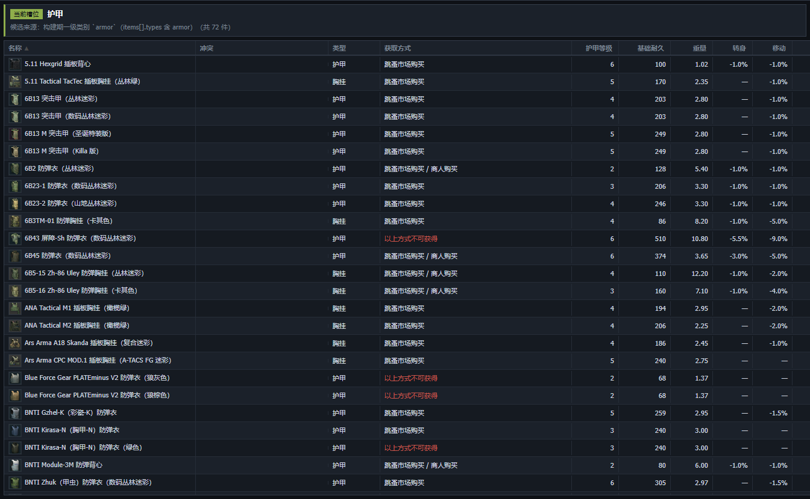
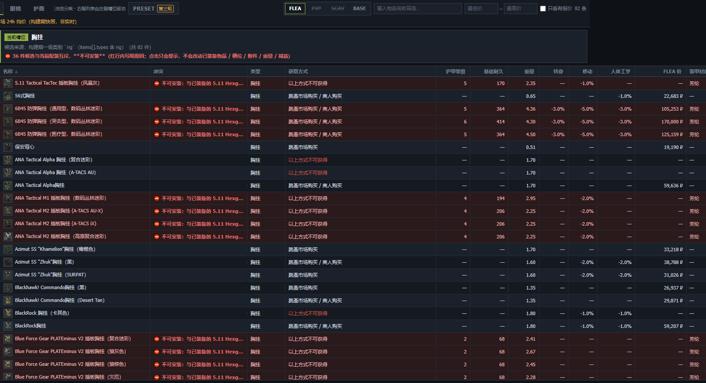
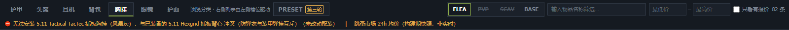
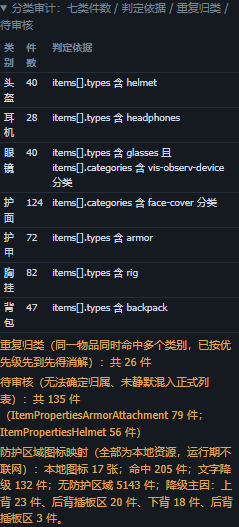
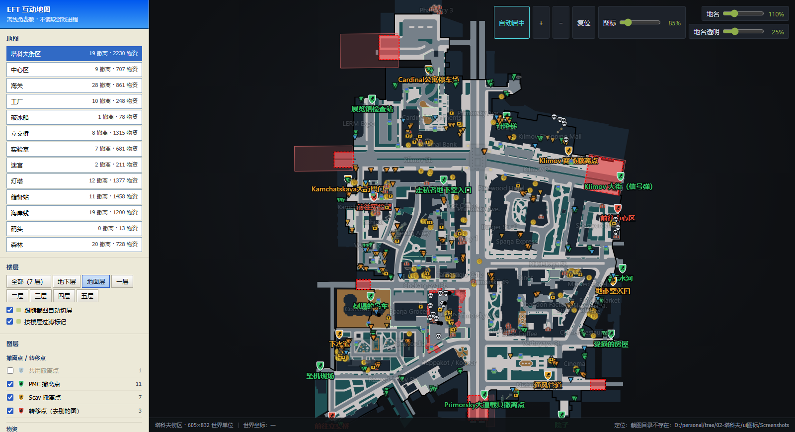
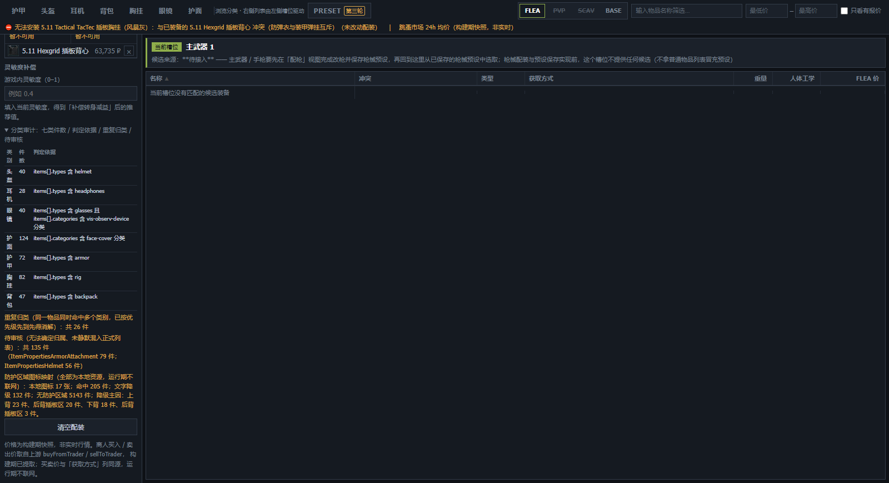
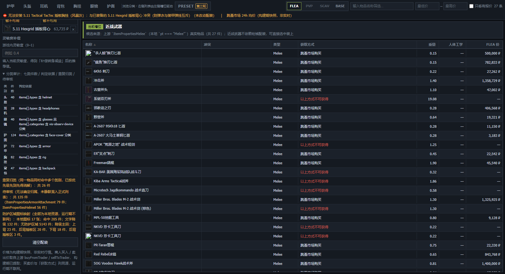
pt === "Melee" 出候选，可实际选中装上。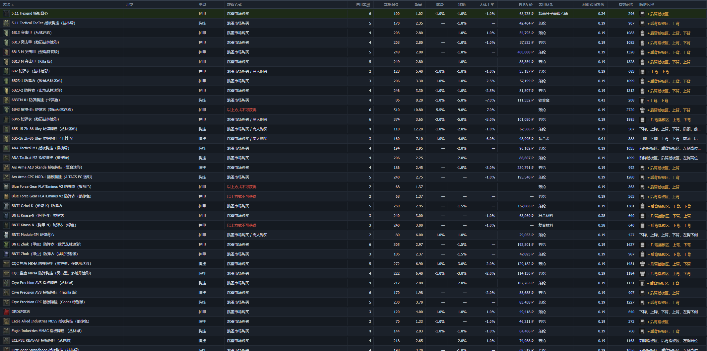
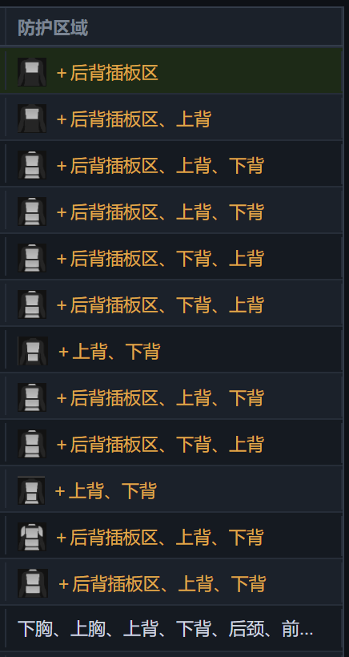
docs/r3-shots/runtime-log.json 摘录）
冲突拦截：
rigConflictRows = 36
rigConflictText = 「5.11 Tactical TacTec 插板胸挂（风暴灰）⛔ 不可安装：与已装备的 5.11 Hexgrid 插板背心 冲突（防弹衣与装甲弹挂互斥）… ＋后背插板区、上背」
点击前后无副作用：
statsBefore = 「移动 转身 人机 -1.0% -1.0% -1.0% 装备总重量 1.02 kg」
statsAfter = 「移动 转身 人机 -1.0% -1.0% -1.0% 装备总重量 1.02 kg」
rigNodeBefore = 「胸挂」 / rigNodeAfter = 「胸挂」
hintAfterBlockedClick = 「⛔ 无法安装 5.11 Tactical TacTec 插板胸挂（风暴灰）：…（未改动配装）」
槽位与候选：
armorRows = 72 / primary1Rows = 1（待接入）/ meleeRows = 27
meleeFirst = 「"杀人鲸"推刃匕首 / Melee / 跳蚤市场购买 / 0.15 / — / 500,000 ₽」
图标审计：
auditIconLine = 「本地图标 17 张；命中 205 件；文字降级 132 件；无防护区域 5143 件；降级主因：上背 23 件、后背插板区 20 件、下背 18 件、后背插板区 3 件。」
| 项 | 现状 | 处理 |
|---|---|---|
| 主武器 1 / 主武器 2 / 手枪的完整选配 | 未接入 | 需要先完成「配枪」视图的改枪与枪械预设保存，再从已保存预设里选取。当前槽位 UI 与数据接口已就位，候选为空、界面写明「待接入」，不用普通物品冒充预设列表。 |
| 商人买入价 / 卖出价（Buy / Sell）、PVP / SCAV 价格档 | 未接入 | 上游 buyFromTrader / sellToTrader 与 PVP / SCAV 专用价本轮未提取，保留位置与视觉结构、置灰「暂不可用」，不拿其他档位价格冒充。当前价格仅 FLEA（跳蚤 24h 均价快照）与 BASE（基础参考价）可用。 |
| 背 / 上背 / 下背 / 后背插板区的防护图标 | 图缺失 | 用户本批提供的头盔 8 张 + 躯干 9 张均为前 / 侧组合图，无「后背」图。已改为：图标照用 + 单元格补标 ＋上背 小字 + 悬停说明 + 审计列出件数，不造成「只防到图里那些」的误读；补图后映射表加键即可命中（无需改判定逻辑）。 |
| 装备预设（PRESET 按钮） | 未实现 | 本轮不在九项范围内，顶栏按钮保留并标注「第三轮」，未做半成品。 |
| 约束 | 自检结果 |
|---|---|
| 不推倒重写、保留槽位树 / 动态附件槽 / 列宽调整 / 物品数据库 / 本地资源 / 地图 | 满足 — 全为增量修复，未重写 app.js，未改动地图渲染器 / 标注 / 底图 / 原有图标 |
| 禁止只改 CSS 或加表面视觉效果而不修业务逻辑 | 满足 — 拦截在 installCheck、统计在 equippedList、来源在构建期落库、图标命中走映射函数 |
| Python 标准库后端 / 原生 JS / 原生 CSS / 无新增运行期第三方依赖 / ES5 前端 | 满足 — 无新增依赖，新增代码保持 ES5（var / 函数声明） |
新样式必须限在 .loadout-workbench 内 | 满足 — 本轮新增的 .tbl-zone-ico / .tbl-zone-more 均为 .loadout-workbench 前缀（原全局写法已迁移），静态测试断言 |
| 运行期不得联网 / 不用远程图标与在线字体 / 图标路径不得依赖开发机绝对路径 | 满足 — 图标为本地 PNG，仅相对路径，静态测试断言无 D: / http: / // |
| 不使用 git reset --hard / git clean 等丢弃改动的操作 | 满足 — 未执行任何破坏性 git 操作 |
| 测试须为真实新增覆盖 | 满足 — 见第三节，静态 + 动态 harness 双份断言 |
报告生成时间：2026-10-20 | 证据目录：docs/r3-shots/（10 张 PNG + runtime-log.json）
| 图标资源：assets/icons/zones/（17 张）